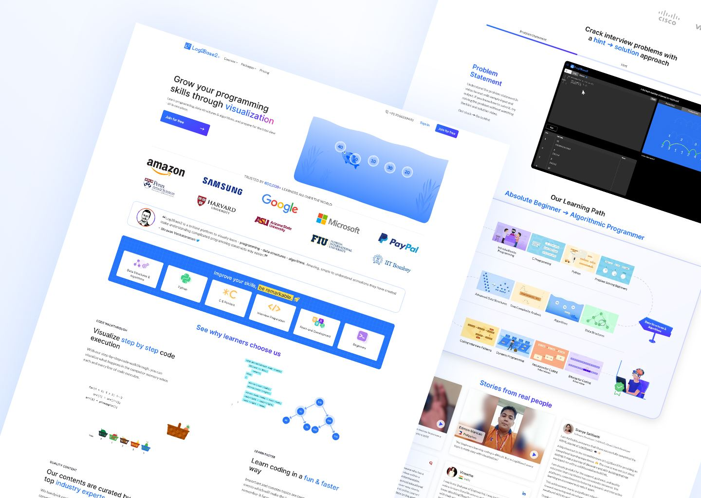
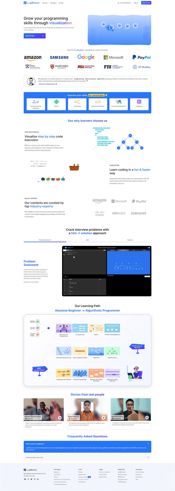
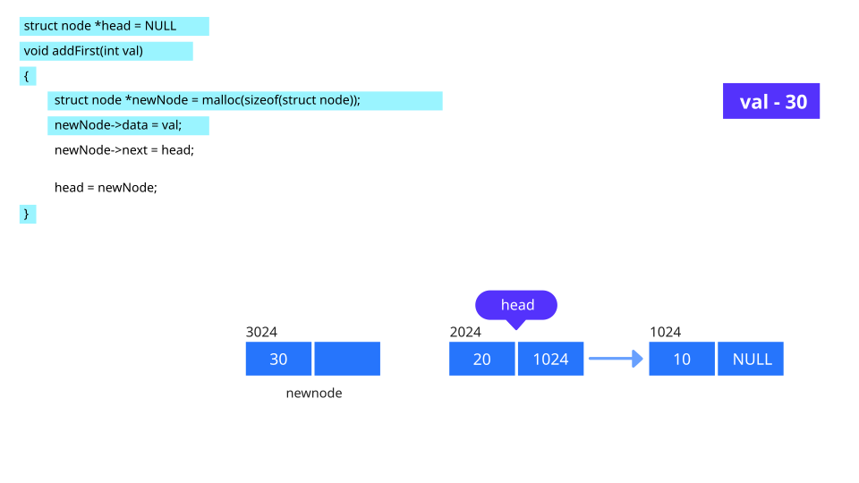
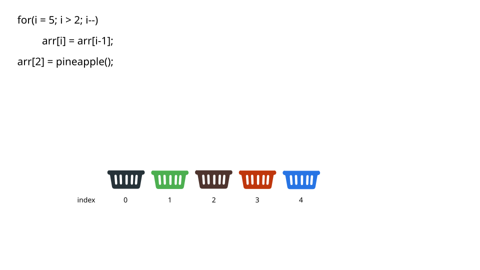
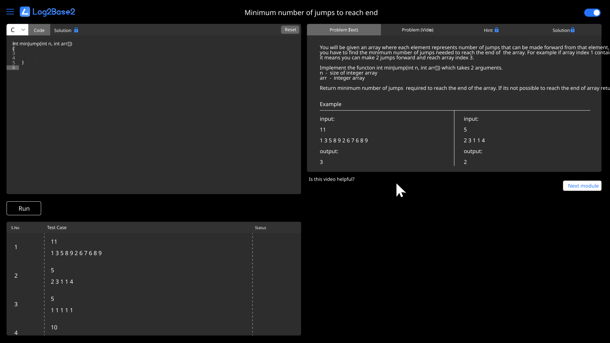
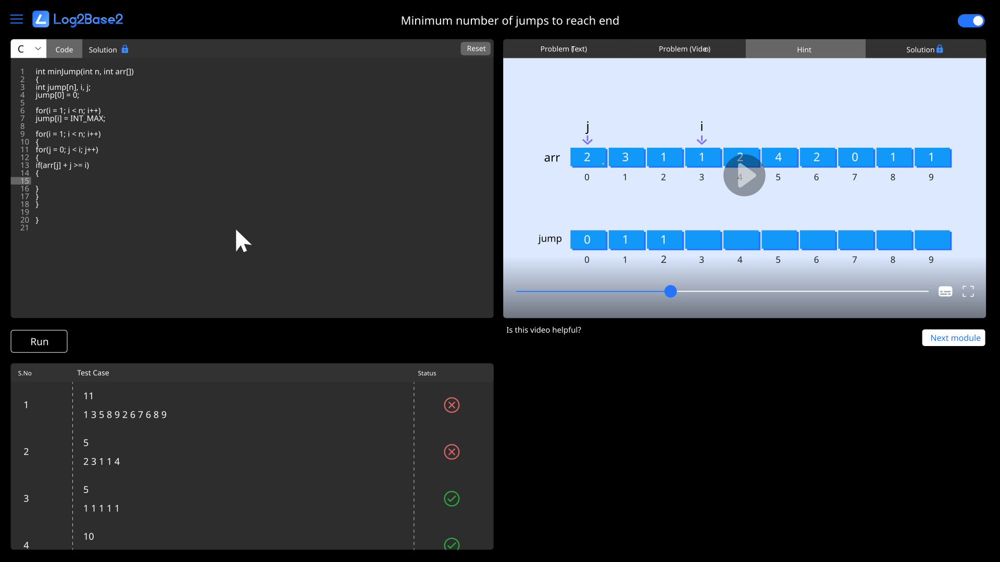
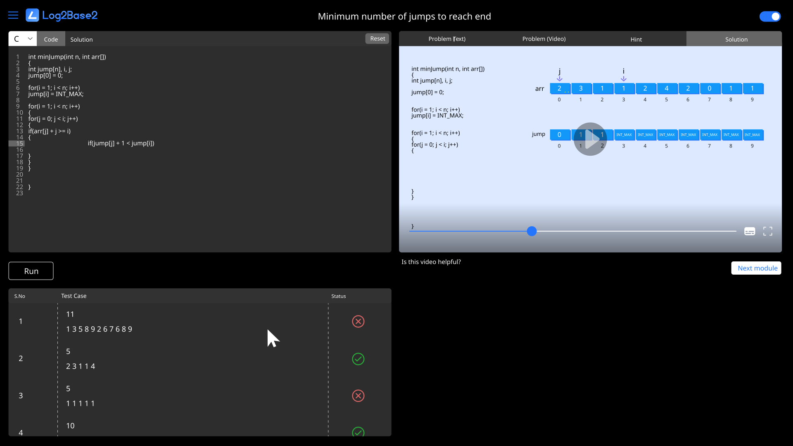

Platform UX and SVG animation system
Log2Base2 promises to teach programming visually, but its static, disconnected screens didn't live up to that promise. I redesigned the platform's UX and built a set of animated SVGs that explain concepts right on the page.
- Client
- Log2Base2
- Role
- Senior designer, product leadership team
- Scope
- Information architecture, UI, SVG animation
- Tools
- Adobe XD, Photoshop, SVGator


The problem
The platform's product is visual learning, yet the interface was a collection of static, unrelated components. It felt generic, and it undercut the one thing that set the product apart.
Objectives
Bring structure and motion together so that animation explains rather than decorates. Keep the system coherent and fast across a large, growing content library.
Approach
I mapped the platform's information architecture and user flows, then built the UI on one grid and component library. I worked with front-end developers throughout on animation performance and browser support.
Six animated concepts
Each SVG was drawn and animated from scratch in SVGator for one section of the platform. SVG instead of video kept files small and sharp at any size, and each loop is timed to catch the eye without pulling attention from the content.





Final solution
One platform experience where screens, components and animations share a single visual language. Each layout puts the concept first and the density of content second.
Outcome
The design system and animations shipped across the platform and contributed to a 35% increase in engagement with visual and animated content. The SVG approach became the standard for new concept pages.
To add: user-flow diagrams and early wireframes for this project.